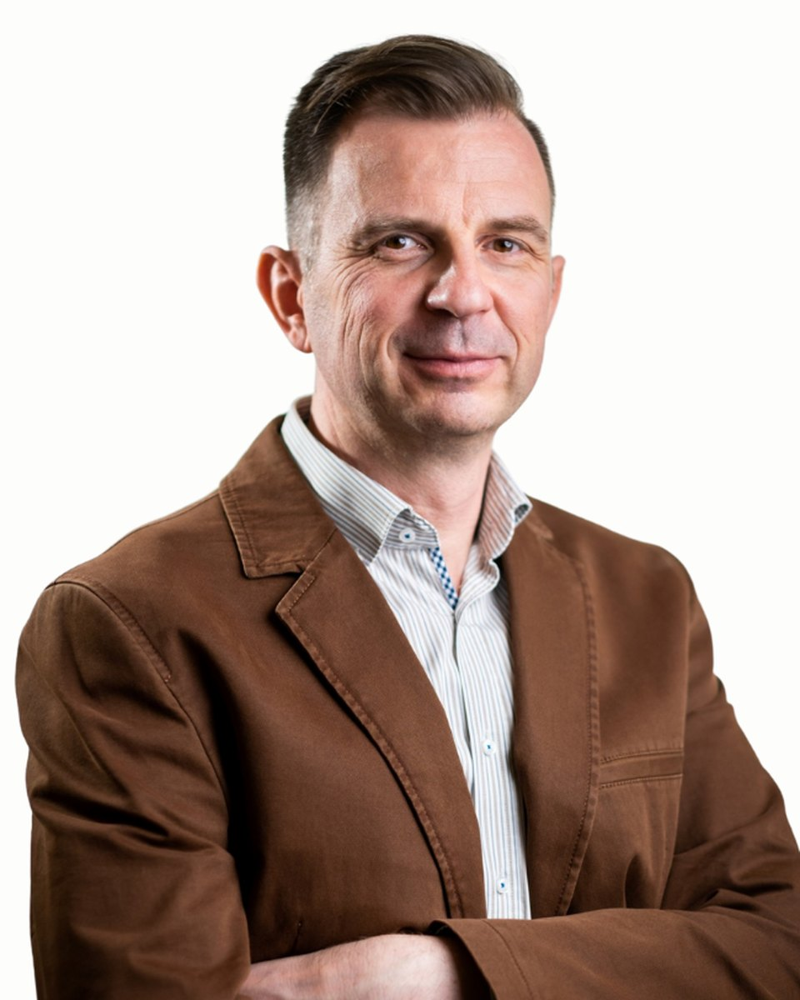

Fogadó kolléga: Vajas Zsuzsanna, pszichológus asszisztens. +36 30 961 1364, hétköznap 9-15. Ő segít, ha nem biztos, hogy Kis Ferenc Balázs a megfelelő választás.
Fejlődni Vágyó Kedves Embertársam!
Eljön az idő, amikor úgy érezzük, hogy azok a keretek, amelyek mentén eddig éltük az életünket, korlátokká válnak: már nem tartanak meg, sőt, inkább akadályoznak. És eljön a pillanat, amikor ezeken a korlátokon át kell lépnünk, hogy új kereteket alkossunk, amelyek segítségével már a saját életünket élhetjük. Ebben a lelkünkben lezajló folyamatban újraértelmezzük, hogy mi ad örömöt, megelégedést és biztonságot, így átalakulhat a karrierünk, megváltozhatnak a kapcsolataink, és markánsan eltolódnak az önmagunkba vetett hitünk hangsúlyai is.
A megújulás kultúrákon és vallásokon átívelő szimbóluma a főnix madár: olyan erőteljes kép, amely lényegében ragadja meg azt az emberi vágyat és tapasztalatot, hogy az erőt vesztett réginek el kell múlnia, a helyébe pedig már egy lendülettel, erővel és reménnyel teli új lép.
A Budai Pszichológus Központ pszichológusaként várom azok jelentkezését, akiknél a régi múlófélben, az új pedig születőfélben van. A közös alkalmainkon a megújulást helyezzük figyelmünk központjába:
• megkeressük a belső, mozgósítható erőforrásokat
• és feltárjuk a mozgósítás akadályait.
Ez a folyamat számos finom lépésből áll, miközben a mélyen végbemenő belső munka rendszerint embert próbáló mértékű. Ebben az érzékeny időszakban támogatom Önt, miközben közösen kitekintünk a karrierjében, a családi és egyéb kapcsolataiban felmerülő és megvalósítandó változásokra, és hogy mindezek milyen jelentéssel bírnak az Ön számára.
Amiben segítek
Kis Ferenc Balázs saját megfogalmazásában
A munkából vagy a családi életből származó kihívásai már önmagukban is nehezek, esetleg a másik oldalra is kihatnak
Az aktuális problémához hasonlókat már sikeresen kezelt a múltban, de a jelenlegi helyzetben mégsem túl felülkerekedni rajta
Vissza kéne menni az irodába, de valahogy képtelen rá, bizonytalan, kifogásokat keres
Újra kellene rendeznie önmagát
Távolságot érez a munkáltatójával, a felettesével szemben, és bár előfordulhat, hogy nincs különösebb oka a bizalmatlanságra, de a bizalomra éppúgy nem
Vezetőként minden próbálkozása ellenére passzivitást tapasztal a beosztottai részéről, és kezd belefáradni a próbálkozásba
Képzés és szakmai út
A képzések és a szupervízió az akkreditált szakképzőhely rendjében folynak. Mit jelent ez Önnek
Iskolai végzettség
Szakdolgozat: Digitális eszközök és szülő-gyerek kapcsolatok
Szakdolgozat: Nyelvi absztrakció az üzleti kommunikációban
Termékmenedzsment szakirány
Szakdolgozat: Légiirányítói szoftverergonómia
Lay Ministry Training Center, St Paul, Minnesota, USA
Módszerspecifikus képzések
Magyar Relaxációs és Szimbólumterápiás Egyesület
Szakmai tapasztalatok
IT szolgáltatási vezető
A Közép- és Kelet-Európai értékesítés vezetője
Lab Services globális kompetenciavezető
A magyarországi szolgáltatási üzletág üzemeltetési vezetője
Szakmai gyakorlatok
További képességek
Nyelvtudás: angol C1, német B2, mindkettő aktív
IBM vezetői tréningek és értékelő központ
Projektmenedzsment tréningek
Társadalmi részvétel
A fóti Waldorf Iskola szülői köre
Híd magazin szerkesztőbizottsági tag
Újpest-Káposztásmegyeri Református Gyülekezet
Tanítómesterek
Akiknél a módszereket tanulta
- Dr. Bill Backus, klinikai szakpszichológus, evangélikus lelkész, számos pszichológiai témájú könyv szerzője, sokszor beszélgettünk hosszú órákon át irodalomról, történelemről, filozófiáról, kultúráról, Istenről, tudományról, gazdaságról és politikáról
- Dr. Martos Tamás, egészségpszichológiai szakpszichológus és egyetemi docens, szegedi témavezetőm, előadásaiban a minőség mindig előnyt élvezett a mennyiséggel szemben
- Dr. Göbel Orsolya, pszichológus és egyetemi docens, károlis gyakorlatvezetőm, a fejlődéslélektan elméletét káprázatosan élővé tette a számomra
- Tóth Ágnes, pszichológus, irigylésre méltó magabiztossággal és szakmai alapossággal tartott kézben egy pszichoonkológiai csoportot, ahol a résztvevőket sok-sok empátiával fejlődésre sarkallta
- Eitler Szilvia, klinikai szakpszichológus, végtelen őszinteséggel mesélt a saját tapasztalatairól a pszichológussá válás útján
- Dr. Párducz Árpád, neurológus, egyetemi docens, igencsak felforgatta az addigi szemléletemet a fiziológiáról
- Gérard Commune, az üzletfejlesztés regionális elnökhelyetteseként könyörtelenül törekedett a tények megismerésére és a folyamatos egyszerűsítésre; nem mellesleg bátorított a tanulásra
Rólam mondták
Kliensek visszajelzései, a hozzájárulásukkal
Nekem sokat jelentett, hogy Balázsnak őszintén fel tudtam tárni a párkapcsolati nehézségeimet, mert azt éreztem, hogy mindig messzemenőkig elfogulatlan és pártatlan. Sok olyan dologra rávilágított, elsősorban a kérdéseivel, másrészt a különböző viselkedési formák, reakciók tárgyilagos elmagyarázásával, amik segítettek összerakni egy teljesebb képet az adott szituációról." ,
Balázsban olyan embert ismertem meg, aki remekül figyel a másikra és könnyen látja meg, fedi fel a lényeges dolgokat. Gondolkodása a probléma megoldására fókuszál. Multinacionális cégeknél szerzett többéves (közép)vezetői gyakorlata, az üzleti élet kultúrájának remek ismerete különlegesen alkalmassá teszi arra, hogy munkahelyi vonatkozású pszichológiai problémákkal foglalkozzon.
Balázs 15+ éves versenyszférai tapasztalatával kiválóan ismeri a vállalatok működését, a belső konfliktusok, érdekellentétek bonyolult világát. Sebészi pontossággal tudja meghatározni a konfliktusok okait, az emberi tényezőket, motivációkat. Praktikus tanácsokkal segít, hogy ebben a világban jól eligazodjunk, és minimalizáljuk ezeknek a konfliktusoknak a negatív hatásait. Balázs tanácsai alapján a munkahelyi stressz jelentősen csökkenthető, ami a munkavállalóknak és a vállalatnak egyaránt hasznára válik, ezért jó szívvel ajánlom a Balázzsal való konzultációt mindenkinek!
Balázs nemcsak jól érzi az emberi lélek problémáit, sokszor útvesztőit, hanem analitikus személyiségének köszönhetően ezt el is tudja helyezni egy nagyobb rendszerben annak belső kölcsönhatásaival egyetemben. Így kiválóan kísér és valódi perspektívára világít rá a legösszetettebb helyzetekben is. Tudja, mi a fontos és mi nem. És jól ráérez, hogy mi okozza a legnagyobb gondot a kliensének, és segít neki ebben felemelkedni.
Ha inkább mást keresne
Három kolléga hasonló területekkel. A teljes regiszterben 37 szakember szűrhető.
Következő lépés
Időpont Kis Ferenc Balázsnál
Írjon nekünk, vagy hívja ügyfélszolgálatunkat hétköznap 9 és 15 óra között. Az első alkalom 50 perc, díja 15-20 ezer forint alkalmanként. Ha Kis Ferenc Balázs naptára tele van, megmondjuk, ki tud hasonló területen fogadni.